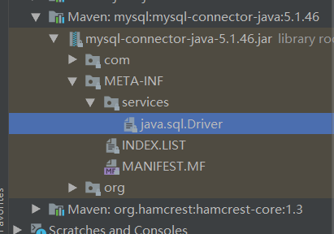
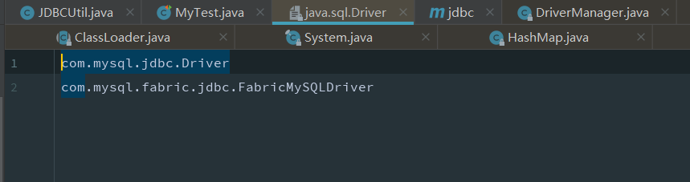
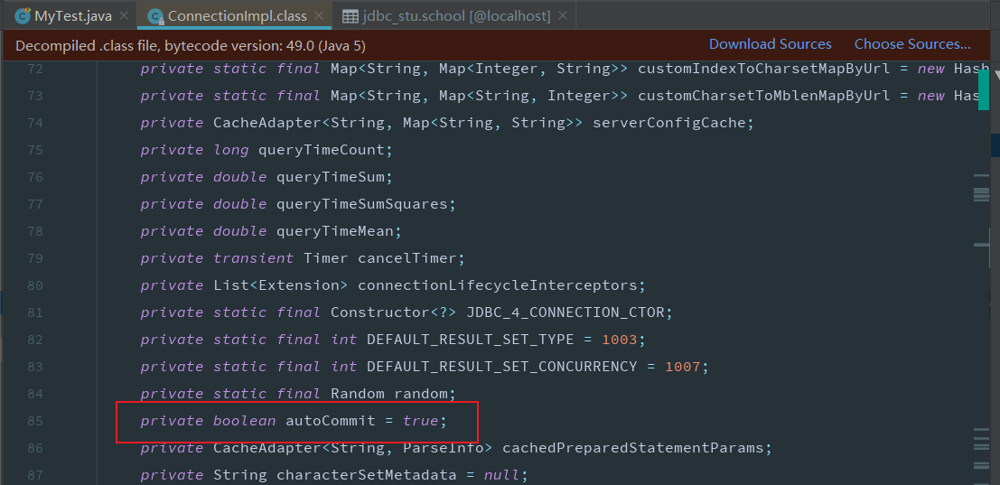
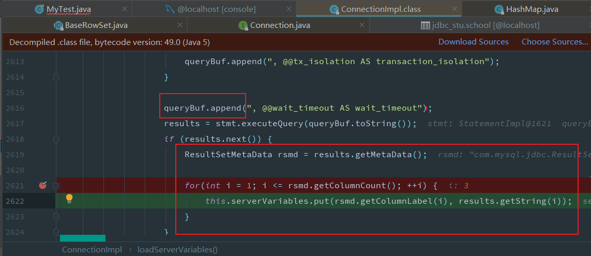

JDBC
全名为Java DataBase Connectivity,由于市面上的数据库种类很多,根据每种数据库需要学习不同的API,sun公司为了方便统一定义了java连接数据库的接口,从此数据库厂商只需要实现对应的接口提供对应的驱动包即可
创建连接
添加依赖
<dependency>
<groupId>mysql</groupId>
<artifactId>mysql-connector-java</artifactId>
<!-- <version>8.0.21</version>-->
<version>5.1.47</version>
</dependency>
注册驱动
获取连接
// 这是java1.6之前注册驱动的方式
// 加载驱动
// 方式一,会加载两次
// DriverManager.registerDriver(new Driver());
// 方式二
// Class.forName("com.mysql.jdbc.Driver");
在java1.6之后,jdbc4无需手动注册驱动,程序会根据驱动包内的文件自动注册


jdbc.driver=com.mysql.jdbc.Driver
jdbc.url=jdbc:mysql://127.0.0.1/jdbc_stu?useSSL=false
jdbc.username=root
jdbc.password=123
package xyz.taoqz.util;
import java.io.IOException;
import java.io.InputStream;
import java.sql.Connection;
import java.sql.DriverManager;
import java.sql.SQLException;
import java.util.Properties;
/**
* @author :almostTao
* @date :Created in 2020/8/16 14:12
*/
public class JDBCUtil {
private static String driver = null;
private static String url = null;
private static String username = null;
private static String password = null;
static {
try {
InputStream resourceAsStream = JDBCUtil.class.getClassLoader().getResourceAsStream("db.properties");
Properties properties = new Properties();
properties.load(resourceAsStream);
driver = properties.getProperty("jdbc.driver");
url = properties.getProperty("jdbc.url");
username = properties.getProperty("jdbc.username");
password = properties.getProperty("jdbc.password");
}
}
public static Connection getConnection() throws SQLException {
return DriverManager.getConnection(url,username,password);
}
// 获取连接
Connection connection = JDBCUtil.getConnection();
// 创建statement对象
Statement statement = connection.createStatement();
// 通过statement执行查询语句
ResultSet resultSet = statement.executeQuery("select * from jdbc_stu.school");
while (resultSet.next()){
System.out.println(resultSet.getString("name"));
}
Connection
@Test
public void insert() throws SQLException {
Connection connection = JDBCUtil.getConnection();
// 设置自动提交为false
connection.setAutoCommit(false);
try {
String sql = "insert into jdbc_stu.school values (null,?)";
// 获取由数据库自增的id
PreparedStatement preparedStatement = connection.prepareStatement(sql, com.mysql.jdbc.PreparedStatement.RETURN_GENERATED_KEYS);
preparedStatement.setString(1, "北大");
int i = preparedStatement.executeUpdate();
System.out.println(i);
ResultSet resultSet = preparedStatement.getGeneratedKeys();
resultSet.next();
System.out.println(resultSet.getInt(1));
// System.out.println(2 / 0);
// 手动提交
connection.commit();
} catch (SQLException e) {
// 当我们尝试回滚时,报错
// com.mysql.jdbc.exceptions.jdbc4.MySQLNonTransientConnectionException: Can't call rollback when autocommit=true
connection.rollback();
e.printStackTrace();
}
}

Statement和PreparedStatement
PreparedStatement相较于Statement多了占位符,可以有效的避免sql注入问题
@Test
public void demoZhuRu() throws SQLException {
Connection connection = JDBCUtil.getConnection();
Statement statement = connection.createStatement();
String param = "''or 1=1";
String sql = "select * from jdbc_stu.school where name = " + param;
// 相当于执行 select * from jdbc_stu.school where name = ''or 1=1
// 直接将其拼接到了sql后
ResultSet resultSet = statement.executeQuery(sql);
while (resultSet.next()) {
System.out.println(resultSet.getString("name"));
}
System.out.println("====================================================");
sql = "select * from jdbc_stu.school where name = ? ";
PreparedStatement preparedStatement = connection.prepareStatement(sql);
// 在底层会使用 instanceof 关键字比较类型,从而调用对应的可以指定类型的方法
// preparedStatement.setObject(1,param);
preparedStatement.setString(1,param);
// 相当于执行 select * from jdbc_stu.school where name = '''or 1=1';
// 不会把参数中的 和sql语句语法有关的当成sql的一部分执行,有效防止了sql注入
resultSet = preparedStatement.executeQuery();
while (resultSet.next()) {
System.out.println(resultSet.getString("name"));
}
}
其他常用方法
public static void main(String[] args) throws Exception {
Connection connection = JDBCUtil.getConnection();
Statement statement = connection.createStatement();
String sql = "select * from jdbc_stu.school";
ResultSet resultSet = statement.executeQuery(sql);
while (resultSet.next()) {
// 获取指定名称列的结果
System.out.println(resultSet.getString("name"));
}
// 结果不明确,不推荐使用
// 查询使用executeQuery
boolean execute = statement.execute(sql);
System.out.println(execute);
// 增删改使用
String updateSql = "insert into school values (null,'哈工大')";
statement.executeUpdate(updateSql);
// 批处理
String batchSql = "delete from school where id = 1;";
String batchSql2 = "delete from school where id = 2;";
statement.addBatch(batchSql);
statement.addBatch(batchSql2);
// 需要注意的是,不能执行select语句
// Can not issue SELECT via executeUpdate() or executeLargeUpdate()
int[] ints = statement.executeBatch();
// 返回执行结果 0 失败或为修改 1 成功
System.out.println(Arrays.toString(ints));
}
ResultSet
ResultSet resultSet = statement.executeQuery(sql);
while (resultSet.next()) {
// 获取指定名称列的结果
System.out.println(resultSet.getInt("id"));
System.out.println(resultSet.getString("name"));
}
存储过程
-- 创建存储过程
create procedure name_like(in nameparam varchar(10),out con int)
begin
set con = 0;
select count(*) into con from school where name like nameparam;
end;
-- 调用
call name_like('%大%',@con);
select @con;
@Test
public void callProcedure() throws SQLException {
Connection connection = JDBCUtil.getConnection();
String callSql = "{call name_like(?,?)}";
CallableStatement callableStatement = connection.prepareCall(callSql);
// 设置参数
callableStatement.setString(1,"%清%");
callableStatement.registerOutParameter(2, Types.INTEGER);
callableStatement.execute();
// 获取返回值
String result = callableStatement.getString(2);
System.out.println(result);
}
事务保存点
@Test
public void savepointDemo() throws Exception {
Connection connection = JDBCUtil.getConnection();
// 开启事务
connection.setAutoCommit(false);
String sql = "insert into school values(null,?)";
PreparedStatement preparedStatement = connection.prepareStatement(sql);
preparedStatement.setString(1,"天津大学");
// 提交后,插入数据库
preparedStatement.execute();
// 设置保存点
Savepoint savepoint = connection.setSavepoint();
// 不会插入
preparedStatement.setString(1,"清华大学");
preparedStatement.execute();
// 回滚至指定的保存点
connection.rollback(savepoint);
// 关闭事务,并提交
connection.setAutoCommit(true);
}
事务的隔离级别
Connection.TRANSACTION_NONE
Connection.TRANSACTION_READ_COMMITTED
Connection.TRANSACTION_READ_UNCOMMITTED
Connection.TRANSACTION_REPEATABLE_READ
Connection.TRANSACTION_SERIALIZABLE
connection.setTransactionIsolation();
获取当前连接数据库的配置
queryBuf
SELECT @@session.auto_increment_increment AS auto_increment_increment, @@character_set_client AS character_set_client, @@character_set_connection AS character_set_connection, @@character_set_results AS character_set_results, @@character_set_server AS character_set_server, @@collation_server AS collation_server, @@collation_connection AS collation_connection, @@init_connect AS init_connect, @@interactive_timeout AS interactive_timeout, @@license AS license, @@lower_case_table_names AS lower_case_table_names, @@max_allowed_packet AS max_allowed_packet, @@net_buffer_length AS net_buffer_length, @@net_write_timeout AS net_write_timeout, @@query_cache_size AS query_cache_size, @@query_cache_type AS query_cache_type, @@sql_mode AS sql_mode, @@system_time_zone AS system_time_zone, @@time_zone AS time_zone, @@transaction_isolation AS transaction_isolation, @@wait_timeout AS wait_timeout

使用元数据改造结果集
ResultSet返回的往往是列的值,而我们大多时候想直接拿到Bean对象,此时可以使用数据库的原数据改造ResultSet
ParameterMetaData --参数的元数据
ResultSetMetaData --结果集的元数据
DataBaseMetaData --数据库的元数据
也可以使用DBUtils
public interface ResultSetHandler<T> {
List<T> handler(ResultSet resultSet) throws Exception;
}
package xyz.taoqz.handler;
import java.lang.reflect.Field;
import java.sql.ResultSet;
import java.sql.ResultSetMetaData;
import java.util.ArrayList;
import java.util.List;
/**
* @author :almostTao
* @date :Created in 2020/8/16 17:54
*/
public class BeanHandler<T> implements ResultSetHandler {
private Class clazz;
private List<T> list;
public BeanHandler(Class clazz) {
this.clazz = clazz;
list = new ArrayList<>();
}
@Override
public List<T> handler(ResultSet resultSet) throws Exception {
Object bean;
while (resultSet.next()){
bean = clazz.newInstance();
//拿到结果集元数据
ResultSetMetaData resultSetMetaData = resultSet.getMetaData();
for (int i = 0; i < resultSetMetaData.getColumnCount(); i++) {
//获取到每列的列名
String columnName = resultSetMetaData.getColumnName(i + 1);
//获取到每列的数据
Object columnData = resultSet.getObject(i + 1);
//设置Bean属性
Field field = clazz.getDeclaredField(columnName);
field.setAccessible(true);
field.set(bean,columnData);
}
list.add((T) bean);
}
return list;
}
}